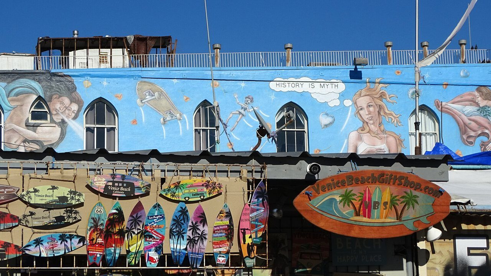

Race, Venice Beach Boardwalk

Behind
Best +0:01
371W
Target 418 W-47 W
- Cadence
- 87rpm
- Heart
- 140bpm
- Speed
- 26.5km/h
Recover19 of 41
0:07
Next: · 0:10 at level 24
+0.2%
3 m climbed
3.81 km
10
Resistance / 32
Solo races your best-time ghost: position reads Ahead or Behind, and solo alone gets a Pause button. Frozen at 9:23.